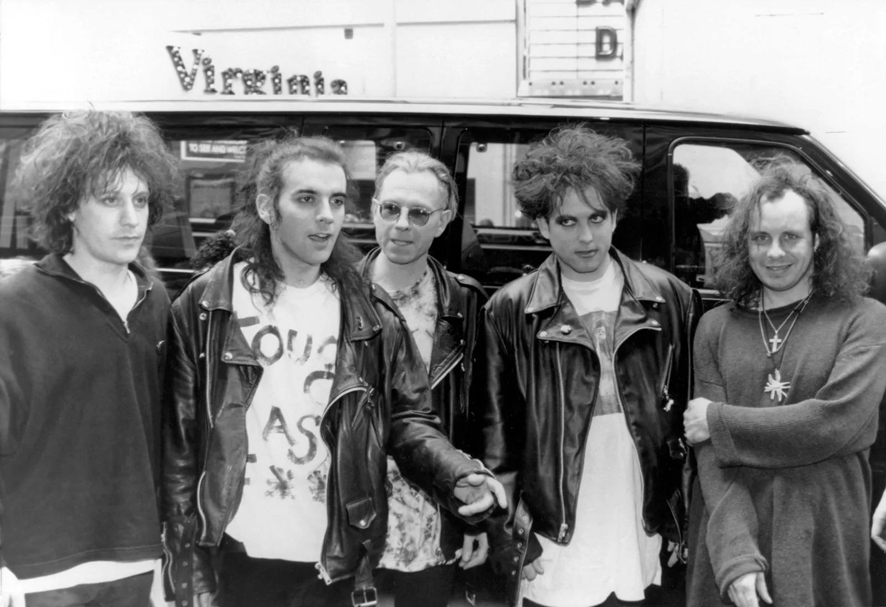

Explore the world of music bands and their details.

The Cure is an English rock band formed in Crawley, West Sussex, in 1976. They are one of the most influential bands in the alternative rock genre, known for their distinctive sound and frontman Robert Smith.
Genre: Post-punk, gothic rock, alternative rock
Members: Robert Smith (vocals, guitar, keyboards), Simon Gallup (bass), Roger O'Donnell (keyboards), Jason Cooper (drums), Reeves Gabrels (guitar)
Famous Albums: Seventeen Seconds (1980), Disintegration (1989), Wish (1992), Bloodflowers (2000)